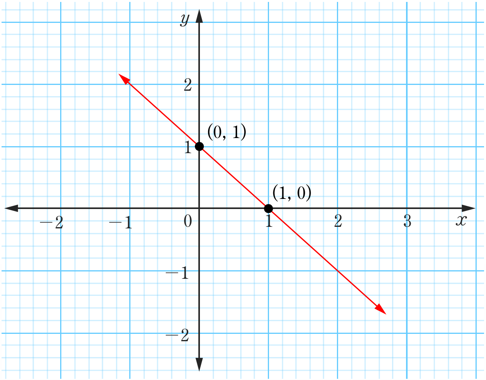
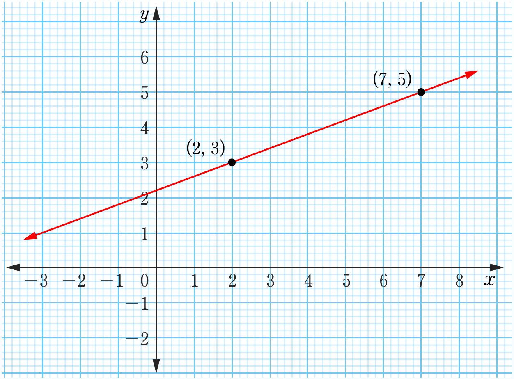

(c)

(d)

Two coordinate graphs: the top shows a red straight line with negative slope passing through two marked points, and the bottom shows a red straight line with positive slope passing through two marked points.(0, 1)(1, 0)(2, 3)(7, 5)